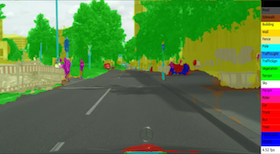
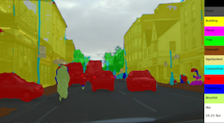

Welcome to Abhishek's Homepage
I am a third year PhD student in Electrical and Computer Engineering, Purdue University; currently working under Prof. Eugenio Culurciello as part of e-Lab.
Most of my research hours are invested in developing and training CNN/RNN architectures in supervised, unsupervised, as well as semi-supervised way. My ongoing research uses both semantic segmentation as well end-to-end learning which can be used in self-driving vehicles, augmented reality, etc. Therefore, I not only focus in getting better accuracy but also in getting real-time performance on embedded devices as well as GPUs.
I received my undergraduate degree in Electronics and Communication Engineering from Indian Institute of Technology (IIT) Guwahati, India in 2012. Moreover, breaking "conventional practice" and to gain more exposure, I did my Masters from Hanyang University, South Korea on complete scholarship in 2014. During my undergraduation and Masters, I worked on robotics, computer vision, and machine learning.
My google scholar profile can be found here. To look into some of the codes written by me, go to my Github page. For my resume and to know more about my research journey, go to my about me page.
Working Demonstrations
-
 Play Video
LinkNet Dataset: Cityscapes
-
 Play Video
LinkNet Dataset: CamVid